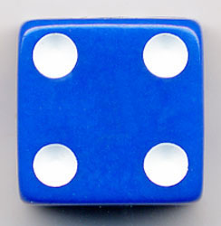

Pig dice game comes from family of jeopardy dice games. In jeopardy dice games players are allowed to go for bigger gains by taking a risk which also can result in not making any gain at all. The objective of Pig dice game is reach to a certain score before your opponents. Normally the game is played for a score of 100.
Pig dice game is played with a single six-sided die and players are allowed to make any number of rolls in each turn. After each roll the dice value is added to their score for that turn.
After each roll player can decide whether to stop rolling and claim the total turn score or continue rolling. If they roll a 1 then they lose all points scored in a particular turn and turn is then passed to the opponent. This has no impact on their overall score. If players decide to stop rolling,
they get the points scored so far which is added to their overall score.The first player to score 100 points (or any other predetermined score at the beginning of the game) wins the game.Learn Pig dice game by playing for a turn below (click box below to load the game)
Variations:
Two-dice Pig:Two-dice Pig is played with two six-sided dice and has following rules